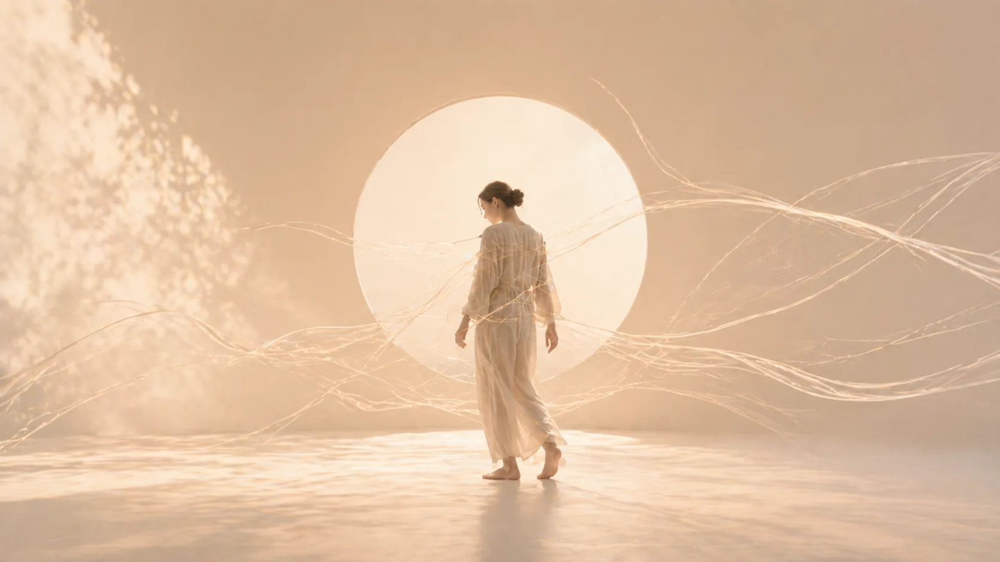
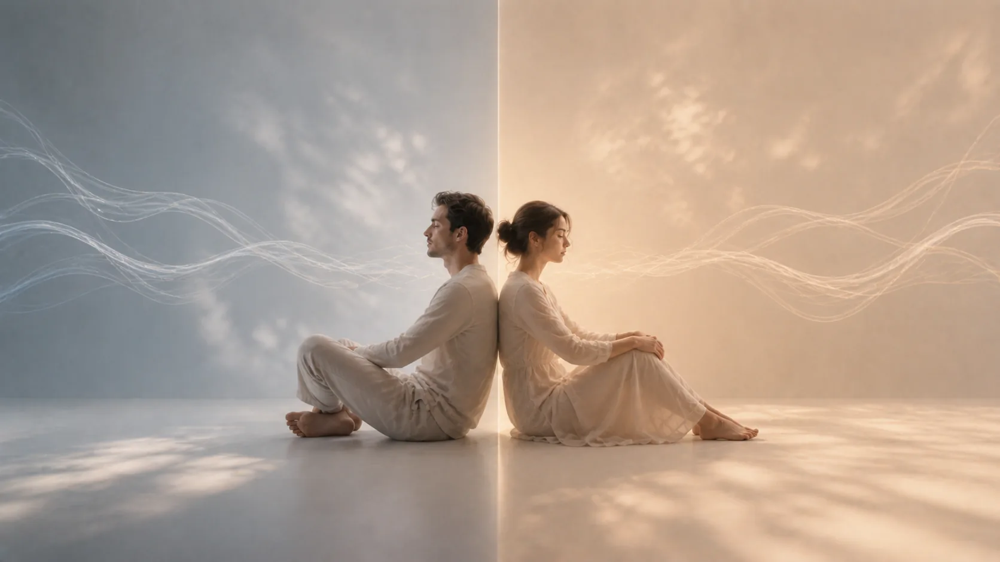

Персональный маршрут вместо хаотичных курсов: выбираете направление, и Система собирает программы, практики и AI-поддержку вокруг вашего запроса.
12+ программ · AI-помощник · медитации · сообщество
Шесть точек входа. Каждая это два подобранных входа в библиотеку: основная и дополнительная программа.
 Базовый маршрут
Базовый маршрут
Эмоции, потребности, контакт и границы. Главная программа Системы, гештальт-подход.
 Состояние
Состояние
Мягкие входы через движение, дыхание и внимание к телу.
 Тело
Тело
Психосоматика: как эмоции и стресс говорят через тело.
 Контакт
Контакт
Созависимые сценарии и мужско-женская динамика.
 Опора
Опора
Восстановление опоры после кризисов и контакт с собой.
 Диалог
Диалог
Навыки общения, границы и разговор о сложном.
Короткий онбординг: что сейчас важнее, спокойствие, тело, отношения, опора или коммуникация. Без диагнозов, просто точка входа.
Вкладка «Сегодня» показывает две подходящие программы и следующий шаг. Не нужно искать по всей библиотеке, путь уже собран.
Видео-уроки, практики и медитации. AI-помощник Лиза отвечает на вопросы по материалам, а сообщество держит ритм.
 AI
AI
Знает каждый урок Системы: объяснит сложное место, подберёт практику под состояние и поможет выбрать программу. Доступна из любого раздела.
 Сообщество
Сообщество
Живое пространство участников: вопросы, поддержка и обратная связь.
 Аудио
Аудио
Практики для сна, тревоги и возвращения внимания в тело.
 Видео
Видео
Короткие разборы, психология в формате пары минут.
 Практика
Практика
Самооценка, конфликты, материнство, концентрированные треки на несколько дней.
Каждая программа входит в одно из направлений, клик ведёт к презентации маршрута.
 Гештальт-подходКонтакт, границы, эмоции и возвращение к себе
Гештальт-подходКонтакт, границы, эмоции и возвращение к себе
 ПсихосоматикаСвязь эмоций, стресса и телесных симптомов
Мини-йогаМягкие практики дыхания и движения
Работа с травмамиКризисы и восстановление опоры
ПсихосоматикаСвязь эмоций, стресса и телесных симптомов
Мини-йогаМягкие практики дыхания и движения
Работа с травмамиКризисы и восстановление опоры
 ГипнозВнимание, трансовые состояния и работа с внушением
Мастер КоммуникацийНавыки общения и управление конфликтом
ГипнозВнимание, трансовые состояния и работа с внушением
Мастер КоммуникацийНавыки общения и управление конфликтом
 Телесная терапияПрактики, которые возвращают внимание в тело
Телесная терапияПрактики, которые возвращают внимание в тело

СозависимостьРабота с созависимыми отношениями
Мужское и ЖенскоеПсихология отношений и природа половРегистрация занимает минуту. Выберите направление, и Система соберёт первый шаг.